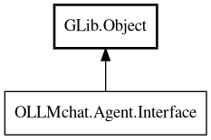

Interface
Object Hierarchy:

Description:
public interface Interface : Object
Interface for agent implementations.
Provides the resources tools need: chat, get_permission_provider(), get_config(), and add_message(). This allows tools to interact with
the interface rather than the Base class directly.
Base implements this interface for agentic usage (with session). A dummy agent can implement this interface for non-agentic usage
(without session).
Since:
1.2.7.21
All known implementing classes:
Content:
Methods:
- public abstract void add_message (Message message)
Add a UI message to the conversation.
- public abstract Chat chat ()
Get the chat instance for this agent. Tools use this to create Message
objects and access chat properties/methods.
- public abstract Config2 config ()
Get the configuration instance for tool execution. Tools use this to
access tool-specific configuration (e.g., API keys).
- public abstract Provider get_permission_provider ()
Get the permission provider for tool execution. Tools use this to
request permissions for file access, command execution, etc.
Inherited Members:
All known members inherited from class GLib.Object
- @get
- @new
- @ref
- @set
- add_toggle_ref
- add_weak_pointer
- bind_property
- connect
- constructed
- disconnect
- dispose
- dup_data
- dup_qdata
- force_floating
- freeze_notify
- get_class
- get_data
- get_property
- get_qdata
- get_type
- getv
- interface_find_property
- interface_install_property
- interface_list_properties
- is_floating
- new_valist
- new_with_properties
- newv
- notify
- notify_property
- ref_count
- ref_sink
- remove_toggle_ref
- remove_weak_pointer
- replace_data
- replace_qdata
- set_data
- set_data_full
- set_property
- set_qdata
- set_qdata_full
- set_valist
- setv
- steal_data
- steal_qdata
- thaw_notify
- unref
- watch_closure
- weak_ref
- weak_unref